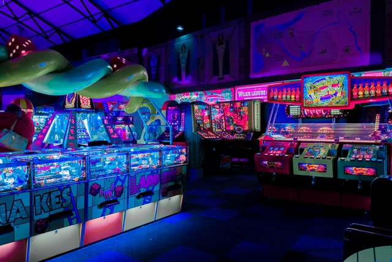

Some facts
-

Business and innovation
- Business Technology
- Technology Studies
- Technology Innovations (MS)
- Technology Leadership (MS)
UAT’s cutting-edge Bachelor of Science Business Technology degree focuses in the areas of entrepreneurship and prepare students for tech startups and high demand technology management careers in today’s tech-driven business world. With a dynamic and synergistically chosen curriculum, our Business Technology degree students learn a unique combination of technical, analytical and managerial skills.
-
Creation and Simulation
- Digital Marker and Fabrication
- Human Computer Interaction
- Robotics and Embedded Systems
- Virtual Reality
UAT’s Virtual Reality Degree applies the design principles of gaming to serious, life-changing applications in such fields as corporate training, medical and therapeutic, military and education. This highly technical field of serious games requires the specialized education that UAT’s virtual reality development degree provides.
-

Cyber security
- Cyber security (MS)
- Network Engineering
- Network Security
- Technology Forensics
Today’s increasingly connected digital world has created an Internet/data-dependent society. A society that has grown to need and have a shortage of cyber security program graduates. Our nation needs more highly skilled Network Engineers who can be responsible for the secure design, implementation and maintenance of our networked systems.
-
Digital Art
- Advertising Art
- Digital Marketing
- Digital Video
Advertising and art are all around us: billboards, websites, TV commercials, digital content and more. Develop your artistic abilities and gain hands-on experience with University of Advancing Technology’s (UAT) Advertising Art degree. This degree allows students to blend their art skills with marketing to create compelling ads that motivate consumers. UAT teaches students how to use the most advanced production tools and how to apply design and advertising to new technology.
-

Game studies
- Game Art and Animation
- Game Design
- Game Production (MS)
- Game Programming
Bring to life your vision of how games should look, move and feel with a degree in Game Art and Animation from University of Advancing Technology (UAT). It’s a new world of game creation propelling an exciting new realm of interaction and creativity that elevates the player experience. UAT’s computer animation degree is essential to advancing it into new dimensions of game play.
-

Software Engineering
- Advancing Computer Science
- Artificial Intelligence
- Data Science
- Software Enigeering (MS)
The Data Science degree at University of Advancing Technology (UAT) provides students with the understanding and skills necessary to discover new ways to use data, analyze big data and IoT, create new data-centric technology and innovate how data is collected and understood. The Data Science degree encompasses the fundamentals of math, programming and statistics, which provides a basis for machine learning, text analysis, natural language processing and deep learning.
About us
UAT is a private technology University focused on educating students in advancing technology who desire to innovate for our future. Our technology infused, urban campus in Tempe, Ariz., is a technology nexus; a collection of technophiles, tech geeks and mavens of the digital world that evolve into top technology executives, master programmers, cyber warriors, forensic sleuths, robotic engineers, interactive filmmakers, and game innovators for entertainment and government animation applications.
Contact Us
Address:
2625 W. Baseline Road
Tempe, AZ 85283-1056
Main Telephone:
602-383-8228
Out of State: 877-UAT-GEEK (877-828-4335)
Fax: 602-383-8222
UAT offices are open:
Monday-Thursday from 8 a.m. to 6 p.m. (MST)
Fridays from 8 a.m. to 5 p.m. (MST).